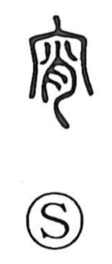

宵

Kun: yoi | On: shou
early evening ・ night
Explanation
Shirakawa sees 宵 as a phono-semantic character. Under the roof radical 宀, which sketches the roof of an ancestral hall, the bronze forms show elements shaped like 小 and 月, the moon. Together they picture moonlight softly entering the shrine, yielding the sense of yoi—the early evening—and the coming night. 肖 functions as the phonetic, giving the on reading shou. The Shuowen already glosses it as “evening,” and the overall composition recalls 明, a figure of light streaming in—here, the moon’s gentle glow.